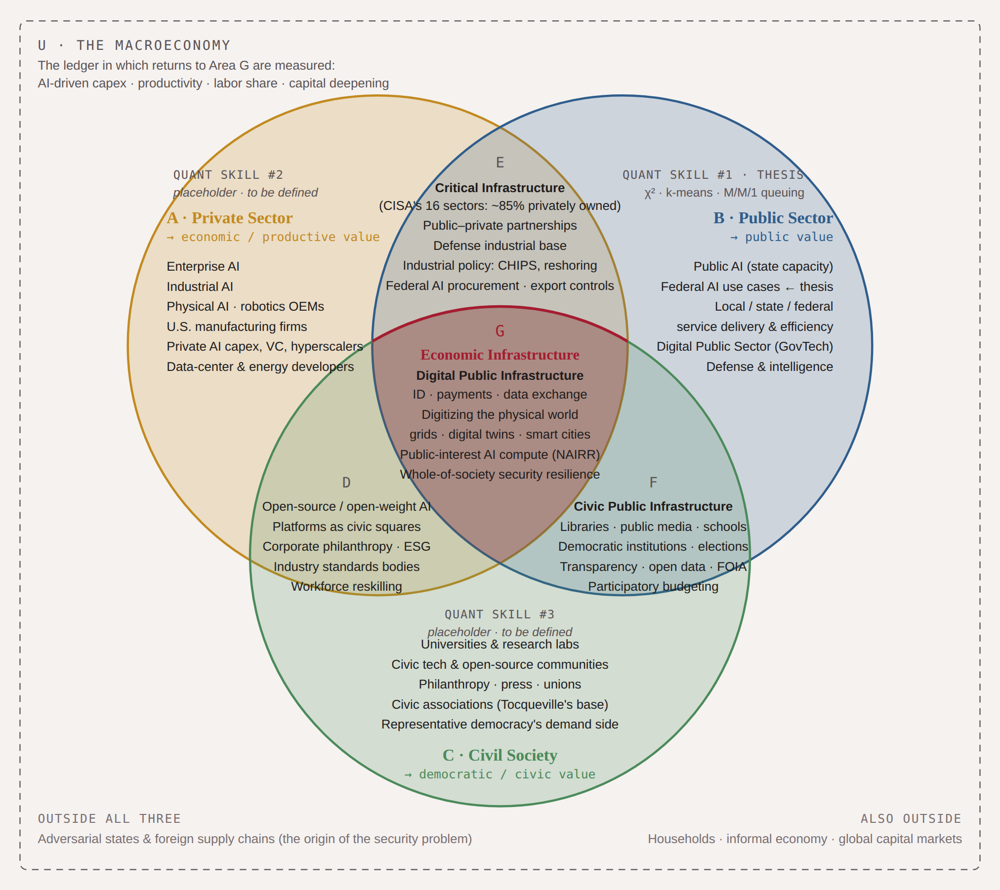

Production
By an economy I mean the ordinary circuit in which firms and public agencies turn labor and capital into goods and services, and in which households and other firms then use them. The quantities I follow are the ones the national accounts already keep: investment, output, the share of income that goes to labor, and the amount of capital behind each worker. AI shows up in that circuit as new plants and new machines, as tasks that used to take a room of people and now take less time, and as goods that were not offered before.
Firms still do most of the making. Government buys from them, regulates them, and runs services of its own, while universities, the press, unions, and voters live with the result and, in some cases, build tools of their own. The infrastructure I have not yet been able to measure is the kind that needs all three at once, such as a way to establish who a person is, a payments system, a power grid, or a public computer that researchers can use. The papers I can finish now each begin with one of those three parties, and each is aimed at that shared infrastructure.
Security is already one reason that plant is jointly operated. On CISA's own count, about 85 percent of critical infrastructure is privately owned, so a chip fabrication plant, the power supply behind a data center, and the defense industrial base are production decisions that also carry a decision about who may sell, who may buy, and what may leave the country. Rival states, and supply lines that another government can cut, lie outside the three parties. They are the pressure under which that joint production has to be counted, and the quantities I want counted through it remain output, investment, and wages.
Private, public, and civic

The dashed frame is the macroeconomy, where investment, output, and wages are measured, and the three circles are private production, the public sector, and civil society. Critical infrastructure is the overlap of the first two, and the middle, where all three meet, is shared infrastructure these papers have not yet measured.
Current work
The thesis uses the lists federal agencies have filed, since 2023, of the AI systems they say they are building or running. I read those lists as a record of public production. From them I want to know when a system should be computed next to the work rather than sent to a distant machine, and whether the descriptions that mention field conditions are the cases that later reach use. Security agencies account for a much larger share of the filings marked as touching rights or safety, while language about field equipment, a weak connection, or an answer required at once is scarce in those same filings. I have written that paper out in ordinary language on this site, and the draft is on SSRN.
Two shorter papers are still in draft. The one on firms follows published series on AI and automation investment and looks for a subsequent movement in measured U.S. manufacturing output. The one on public comment follows filings on federal rules, to see whether their volume and character changed once generative tools were easy to use, and whether the earlier filings forecast that change.
I do this as lead researcher and co-founder of the Future Economies Kuwait Research Lab at Columbia. With the Kuwait Institute for Scientific Research the lab is working on quantum infrastructure, and we are in conversation with the Eurasia Group's Institute for Global Affairs and with IBM Kuwait.
Path
I finished two Columbia degrees in 2025: an M.P.A. in International Security Policy and an M.A. in Quantitative Methods in the Social Sciences, in international finance and economic policy. Anya Schiffrin Stiglitz directed the technology, media, and communication specialization. Before that I studied economics and business at California State University, Chico, and received the 2016 Economics Outstanding Student Award.
From 2023 to 2025 I worked at the United Nations, across the Development Coordination Office, the Capital Development Fund, and the Permanent Mission of Afghanistan. I managed a Columbia SIPA capstone for UN DESA on development cooperation, and a quantitative-methods capstone for Consumer Reports.
Before graduate school I founded Saader and worked in enterprise sales, at Taygo, Rubrik, and Landed, and on two political campaigns. At Columbia I taught for Sigridur Benediktsdottir on Keynes and on macroprudential policy. At Chico I taught for Michael Perelman and worked as a research assistant for Ryan Miller.
In 2025 I spoke at the United Nations Open-Source Week on data protection in shared digital systems, on AI and work, and on how those systems get governed. I edited the student draft of "People-centered Intelligence for Human Development" for a UNDP workshop, and led sessions at the Columbia and UN roundtables in 2024 and 2025.
LinkedIn
·
GitHub
·
ashkaan.daneshi@columbia.edu